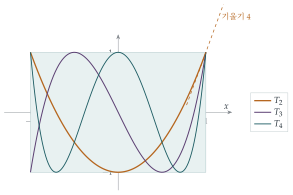

STEP I 1988, 문제 7
계속 읽기 전에 문제를 먼저 읽어 보자. 문제는 STEP Support Programme의 문제 데이터베이스에 있다: step.maths.org/questions/88-s1-q7
도입
어떤 구간에서 함수(function)의 값이 \(-1\)과 \(1\) 사이에 머문다는 것을 안다면, 그 함수가 얼마나 가파른지에 대해 무언가 말할 수 있을까? 일반적인 함수라면 그럴 수 없다. \(\sin(1000x)\)는 \(-1\)과 \(1\) 사이에 머물지만 기울기(slope)가 \(1000\)만큼 커지기도 한다. 하지만 이차함수(quadratic)는 그렇게 요동칠 수 없다. 이 문제는 상자 \(|x| \leq 1\), \(|y| \leq 1\) 안에 갇힌 이차함수의 기울기가 상자 안에서 결코 \(4\)보다 클 수 없으며, \(4\)가 가능한 최선의 값임을 보여 준다.
이 문제의 기원은 놀랍다. 1887년, 주기율표(periodic table)로 유명한 화학자 드미트리 멘델레예프(Dmitri Mendeleev)는 용액의 밀도가 농도에 따라 어떻게 달라지는지 연구하면서 자료에 이차함수를 맞추고 있었다. 그는 자료의 오차가 곡선의 기울기에 얼마나 크게 영향을 줄 수 있는지 알아야 했고, 바로 이 문제의 결과를 증명(proof)했다. 2년 뒤 젊은 안드레이 마르코프(Andrei Markov)는 임의의 차수(degree)의 다항식(polynomial)에 대한 일반적인 문제를 해결했고, 그 답은 곧바로 수학에서 가장 중요한 다항식들 가운데 일부로 이어졌다.
시작하기 전에
\(\mathrm{f}'(x)\)에 대한 공식은 \(-1\), \(0\), \(1\)에서의 \(\mathrm{f}\)의 값 세 개만 사용한다. 왜 세 개의 값만으로 이차함수의 도함수(derivative)가 결정되어야 할까?
이차함수는 계수(coefficient)가 세 개이므로 임의의 세 점에서의 값으로 결정된다. 따라서 계수들의 또 다른 함수인 도함수도 그 세 값으로 나타낼 수 있어야 한다. 공식은 그 방법을 알려 준다. 그리고 이것이 바로 필요한 것인데, 가정(hypothesis) \(|\mathrm{f}(x)| \leq 1\)은 \(\mathrm{f}\)의 값에 대해 알려 주는 반면, 결론(conclusion)은 그 도함수에 관한 것이기 때문이다.
차근차근 풀기
단계 1 공식
\(\mathrm{f}(1) = a + b + c\), \(\mathrm{f}(-1) = a - b + c\), \(\mathrm{f}(0) = c\)이다. 따라서 우변은 \[(a + b + c)\left(x + \tfrac12\right) + (a - b + c)\left(x - \tfrac12\right) - 2cx\] 이다. \(x\)의 계수는 \((a + b + c) + (a - b + c) - 2c = 2a\)이고, 상수항(constant term)은 \(\frac12(a + b + c) - \frac12(a - b + c) = b\)이다. 따라서 우변은 \(2ax + b = \mathrm{f}'(x)\)이다.■
단계 2 상계(bound)
공식의 양변에 절댓값(absolute value)을 취하고, \(|\mathrm{f}(1)|, |\mathrm{f}(-1)|, |\mathrm{f}(0)| \leq 1\)과 함께 삼각부등식(triangle inequality)을 사용하라. \(x\)의 함수로서 \(|\mathrm{f}'(x)|\)에 대해 어떤 상계를 얻는가?
삼각부등식 \(|u + v + w| \leq |u| + |v| + |w|\)에 의해 \[|\mathrm{f}'(x)| \leq |\mathrm{f}(1)|\,\bigl|x + \tfrac12\bigr| + |\mathrm{f}(-1)|\,\bigl|x - \tfrac12\bigr| + 2|\mathrm{f}(0)|\,|x| \leq \bigl|x + \tfrac12\bigr| + \bigl|x - \tfrac12\bigr| + 2|x|.\]
\(|x| \leq 1\)일 때 \(\bigl|x + \tfrac12\bigr| + \bigl|x - \tfrac12\bigr| + 2|x| \leq 4\)임을 보여라. (부호에 따라 경우를 나누어라.)
\(|x| \leq \frac12\)이면 \(x + \frac12 \geq 0\)이고 \(x - \frac12 \leq 0\)이므로 \(\bigl|x + \tfrac12\bigr| + \bigl|x - \tfrac12\bigr| = (x + \tfrac12) - (x - \tfrac12) = 1\)이고, 전체는 \(1 + 2|x| \leq 2\)이다.
\(\frac12 \leq |x| \leq 1\)이면 두 괄호 안의 식은 모두 \(x\)와 부호가 같으므로 \(\bigl|x + \tfrac12\bigr| + \bigl|x - \tfrac12\bigr| = 2|x|\)이고, 전체는 \(4|x| \leq 4\)이다.
어느 경우든 \(|\mathrm{f}'(x)| \leq 4\)이다.■
이 상계는 \(x = \pm1\)에서만 도달한다. 구간의 가운데 절반에서는 기울기가 많아야 \(2\)이다.
단계 3 극단적인 예
\(x = 1\)에서 상계에 도달하려면 2단계의 모든 부등식에서 등호가 성립해야 한다. \(\mathrm{f}(1)\), \(\mathrm{f}(-1)\), \(\mathrm{f}(0)\)은 어떤 값을, 어떤 부호로 가져야 할까?
\(x = 1\)에서 공식은 \(\mathrm{f}'(1) = \frac32\mathrm{f}(1) + \frac12\mathrm{f}(-1) - 2\mathrm{f}(0)\)이다. 이 값이 \(4\)가 되려면 \(\mathrm{f}(1) = 1\), \(\mathrm{f}(-1) = 1\), \(\mathrm{f}(0) = -1\)이어야 한다. \((-1, 1)\), \((0, -1)\), \((1, 1)\)을 지나는 이차함수는 \[\mathrm{f}(x) = 2x^2 - 1,\] 이므로 \(a = 2\), \(b = 0\), \(c = -1\)이다. \(|x| \leq 1\)에서 \(x^2 \in [0, 1]\)이므로 \(2x^2 - 1 \in [-1, 1]\)이고, \(\mathrm{f}'(1) = 4\)이다.■
돌아보기
알고 싶은 것을 아는 것으로 나타내라. 공식은 도함수를 \(\mathrm{f}\)의 값으로 다시 썼고, 바로 그 값에 대해 가정이 정보를 주었다.
삼각부등식. 합을 절댓값들의 합으로 누르는 것은 해석학(analysis)에서 가장 흔한 수법 가운데 하나이다.
등호 조건(equality condition)에서 극단적인 경우를 찾아라. 모든 부등식에서 언제 등호가 성립하는지 물으니 예 \(2x^2 - 1\)이 곧바로 나왔다.
숨은 수학
안드레이 마르코프는 1889년에 \(p\)가 \([-1, 1]\)에서 \(|p(x)| \leq 1\)을 만족하는 \(n\)차 다항식이면 \[|p'(x)| \leq n^2 \qquad\text{단, } |x| \leq 1\] 임을 증명했다. \(n = 2\)일 때 이것은 우리의 상계 \(4\)이다. 극단적인 경우는 체비쇼프 다항식(Chebyshev polynomials) \(T_n\)으로, 다음과 같이 정의된다. \[T_n(\cos\theta) = \cos n\theta.\] 예를 들어 \(\cos 2\theta = 2\cos^2\theta - 1\)에서 우리의 극단적인 이차함수 \(T_2(x) = 2x^2 - 1\)을 얻고, \(\cos 3\theta = 4\cos^3\theta - 3\cos\theta\)에서 \(T_3(x) = 4x^3 - 3x\)를 얻는다. \(T_n(x) = \cos n\theta\)이므로 이 다항식들은 \(n\)차 다항식이 할 수 있는 한 가장 자주 \(-1\)과 \(1\) 사이를 진동하며, 양 끝에서 가능한 한 가장 가파르다(그림 3.6.1). 마르코프의 동생 블라디미르(Vladimir)는 1892년에 이 결과를 고계도함수로 확장했다.

보간법(interpolation)
문제의 공식은 라그랑주 보간법(Lagrange interpolation)의 한 예이다. 몇 개의 점에서 함수의 값이 주어지면, 그 점들을 지나는 차수가 가장 낮은 유일한 다항식을 써 내고, 그것으로 함수나 그 도함수를 근사한다. 여기서 세 점은 \(-1, 0, 1\)이다. 이런 공식은 수치해석(numerical analysis)의 모든 곳에서 쓰이며, 예를 들어 측정 자료로부터 도함수를 추정하는 데 쓰인다. 마르코프 부등식은 이런 공식에 따라붙는 경고이다. 값의 작은 오차가 도함수에서는 최대 \(n^2\)배까지 커질 수 있는데, 이것이 바로 멘델레예프가 걱정했던 문제이다.
실제로 쓰이는 체비쇼프 다항식
체비쇼프 다항식은 근사 이론(approximation theory)의 일꾼이다. 함수를 등간격의 점이 아니라 \(T_n\)의 근에서 보간하면 오차를 제어할 수 있다. 등간격의 점을 쓰면 고차 보간이 구간의 양 끝 근처에서 크게 어긋날 수 있다(룽게 현상(Runge’s phenomenon)). 함숫값을 기계 정밀도까지 계산하거나 미분방정식을 매우 정확하게 푸는 소프트웨어는 내부적으로 체비쇼프 전개를 사용하는 경우가 많다.
사고 기술
가정이 한 종류의 양에 대해 알려 주고 결론이 다른 종류의 양에 관한 것이라면, 둘을 잇는 항등식을 찾은 뒤 항별로 상계를 구하라.
그리고 상계를 얻었다면 그것이 최선인지 물어라. 등호 조건을 거꾸로 따라가면 대개 극단적인 예에 이르고, 그 극단적인 예는 그 자체로 흥미로운 경우가 많다.
더 도전하기
일반적인 아이디어. \(\mathrm{f}\)가 이차함수이면 \(\mathrm{f}(x) = \mathrm{f}(-1)\dfrac{x(x-1)}{2} + \mathrm{f}(0)(1 - x^2) + \mathrm{f}(1)\dfrac{x(x+1)}{2}\)임을 보이고, 이를 미분하여 문제의 공식을 다시 얻어라.
유일성(uniqueness). 심화 \([-1, 1]\)에서 \(|\mathrm{f}(x)| \leq 1\)이고 \([-1, 1]\)의 어떤 점에서 \(|\mathrm{f}'(x)| = 4\)인 이차함수는 \(\pm(2x^2 - 1)\)뿐임을 보여라.
체비쇼프 다항식. \(\cos 3\theta = 4\cos^3\theta - 3\cos\theta\)를 이용하여 \(T_3(x) = 4x^3 - 3x\)임을 확인하고, \(T_3'(1) = 9\)임을 확인하라. \(T_{n+1}(x) = 2xT_n(x) - T_{n-1}(x)\)임을 보이고, \(T_4\)를 구하라.
\(T_n\)의 기울기. \(T_n(\cos\theta) = \cos n\theta\)를 \(\theta\)에 대해 미분하여 \(T_n'(\cos\theta) = \dfrac{n\sin n\theta}{\sin\theta}\)임을 보이고, \(\theta \to 0\)으로 보내어 \(T_n'(1) = n^2\)임을 유도하라.
더 읽을거리
Lloyd N. Trefethen, Approximation Theory and Approximation Practice (SIAM). 체비쇼프 다항식과 보간법에 관한 아름다운 현대적 책으로, 실력 있는 고등학생도 읽을 수 있으며 책 전체에 걸쳐 컴퓨터 실험이 실려 있다.
Peter Borwein & Tamás Erdélyi, Polynomials and Polynomial Inequalities (Springer). 마르코프 부등식과 그 친척들에 대한 전체 이야기를 다룬다. 고급 수준이다.
George M. Phillips, Interpolation and Approximation by Polynomials (Springer). 라그랑주 보간법, 체비쇼프 다항식, 마르코프형 부등식을 다루는 학부 교재이다.